| |
|
ÜSTYAPI KATMANLARI
|
Üstyapı Kesitlerinin Güzergah Boyunca Tanımlanması ve Kesitler Arası Geçiş
Üstyapı Katmanlarının Hesaplanması Genişletme ve Takviye için Üstyapı Katmanları Bir Projenin Üstyapı Katmanlarını Oluşturmak İçin İzlenecek Adımlar Genel Bilgiler 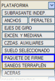 [ÜSTYAPI KATMANI] seçeneğine tıklandığında, uygulama, farklı üstyapı katmanlarının geometrisini tanımlamanın ve her birinin hangi kilometreler arasında uygulanacağını belirtmenin mümkün olduğu bir diyalog kutusu sunar. Bu menü, üstyapı katman kesitlerinin tanımlanmasına ve bu kesitlerin, tüm hesaplamaları tamamlanmış bir güzergaha uygulanmasına olanak tanır. Her kesit, geometrisi ileride analiz edilecek bir dizi parametreye göre tanımlanan en fazla elli bileşeni kabul eder. ISTRAM®/ISPOL®'deki üstyapı katmanları, ayrıca çift taşıt yolunda çift dever durumunda (örneğin, Kanada otoyollarında tipik olan) doğru şekilde çalışacak şekilde tasarlanmıştır. 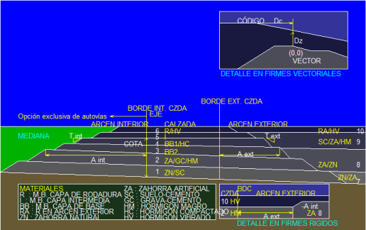
Bir güzergahın üstyapı katmanlarını oluşturmak için, BOYKESİT veya PROJE menüsünde güzergahın hesaplanması sonucunda ISPOL#.per (burada # güzergah numarasıdır) dosyasında saklanan platform ve subrasante (tesviye yüzeyi) geometrisi kullanılır. İyileştirilmiş taban, seçilmiş malzeme veya zayıf zemin kazısı gibi çeşitli adlarla anılan katmanlar ise ayrıca tanımlanır. Bu nedenle, üstyapı katmanları oluşturulmadan önce güzergahın boykesiti ve platformu tamamen tanımlanmış ve hesaplanmış olmalıdır. Üstyapı katmanlarının doğru bir şekilde oluşturulabilmesi için, üstyapı alt kesiminin başlangıç ve bitiş kilometreleri istenen aralığı kapsamalıdır (program bu aralığın dışına enterpolasyon yapmaz). Bu üstyapı ayrıştırması, detaylı metrajları içeren bir rapor (firme#.res) ve her güzergah için üstyapı katmanlarının ayrıştırılmış geometrisini içeren bir enkesit dosyası (ISFIR#.per) ile sonuçlanır. Üstyapı dolgu hattı (312), üstyapı dolgularının metrajında kullanılmak üzere bu dosyada en son oluşturulur. Bu dosya, ilgili ISPOL#.per dosyasından bağımsızdır, ancak daha sonraki bir enkesit düzenleme işlemi olan "Birleştir" ile biri diğerine dahil edilebilir. Eğer işlem bir genişletme ve takviye projesi ise, üstyapı katmanlarının oluşturulması iyileştirme işleminden önce yapılmalıdır. Çünkü iyileştirme işlemi, subrasante yüzeyini mevcut üstyapıya uyarlamak için değiştirir ve bu şekilde değiştirilmiş bir subrasante, deforme olmuş bir üstyapı katmanı oluşturur. Benzer bir durum, ISPOL#.per dosyasının teorik içeriğini değiştiren platform birleştirme ve kırpma işlemleri için de geçerlidir. Üstyapının bu platform değişikliklerine uyarlanması, bu menüde ve BOYKESİT menüsünde bulunan üstyapı katmanlarını yeniden hesaplama seçeneği ile ikinci bir işlemde yapılır. Aynı zamanda PROJE menüsünden [RFI] kutucuğu aktifken de bu işlem gerçekleştirilir. 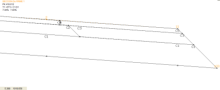Dikey menüdeki [Kesit] seçeneğine tıklandığında, ISPOL#.per dosyalarındaki L67 (proje kotu) hattına eşdeğer olan L312 yüzeyi de çizilir, böylece dolgu olup olmayacağı görsel olarak anlaşılabilir. Ayrıca, bu kesite yaklaşıldığında her üstyapı katmanına karşılık gelen numaralar ve proje kotu kodları gösterilir. Dikey menüdeki seçenekler, herhangi bir tip kesitin herhangi bir kilometrede görüntülenmesine olanak tanır. 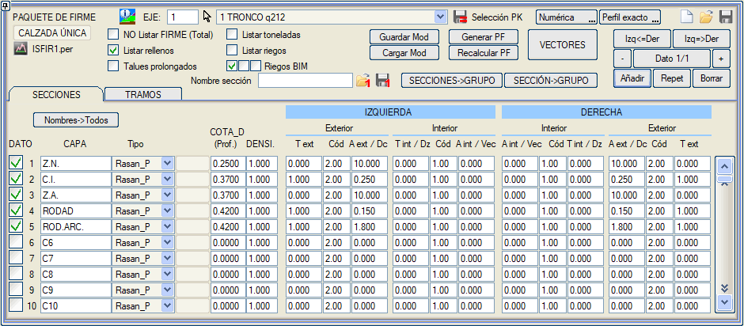
Bu menüdeki kilometre verileri hem grafiksel hem de sayısal olarak girilebilir ([Tıkla]/[Sayısal] butonları). Grafiksel olarak girilmesi durumunda, noktanın güzergah üzerindeki izdüşümü tam bir enkesite veya enterpole edilmiş bir enkesite referans verebilir. Menünün KESİTLER sekmesi, her katmanın kalınlığını subrasante yüzeyine göreceli kotuna ve konumuna göre tanımlayan değerlerin girilmesine olanak tanır. Bu verilerin her bir seti, bir üstyapı kesiti tanımlar. Diyalog kutusu 10 katman (1-10) gösterse de, menünün sağ tarafındaki kaydırma çubuğu ile geri kalanlar görüntülenebilir. [Ekle], [Tekrarla] ve [Sil] butonları sırasıyla yeni üstyapı kesitleri oluşturmaya, mevcut olanı tekrarlamaya veya silmeye olanak tanır. Oluşturulan farklı kesitlerin güzergah boyunca tanımlandığı, aralarındaki geçişlerin belirtildiği ve genişletme ve iyileştirme projelerinde nasıl uygulanacağının gösterildiği yer KESİMLER sekmesidir. Kesitler ve kesimlerle bu şekilde çalışmak, bir kesit farklı kesimlerde tekrarlanıyorsa, verilerini tekrar girmeye gerek olmaması avantajını sunar. Bir Üstyapı Kesitinin Geometrik Tanımı Üstyapı katmanlarını oluşturan farklı malzemelerin tanımı, yapım sırasına göre yapılmalıdır; yani ilk veriler temel tabakalarına, sonrakiler ara tabakalara ve en son veriler en üst tabakalara karşılık gelmelidir. Bunun nedeni, üstyapının her bir bileşeninin (inşa edildiği gibi) öncekilerin üzerine oturtularak hesaplanmasıdır. Dolayısıyla, "üstyapı kutusu içinde bir katman tarafından işgal edilen kısım, sonraki katmanlar tarafından işgal edilemez". 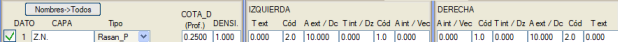
Her katmana, metraj listelerinde bileşeni tanımlamak için bir ad (boşluksuz) atanabilir. Belirli bir üstyapı bileşeninin metrajının görünmesi istenmiyorsa, ad '<' (küçüktür) ve '>' (büyüktür) sembolleri arasına yazılmalıdır. Örneğin, ad olarak <granulertemel> yazılırsa, bu metraj listelerde görünmeyecektir. Bir güzergahtaki üstyapı katmanlarının ad listesi, o güzergahta tanımlanan tüm üstyapı kesitleri için ortaktır. Bu nedenle, her satırın başında, mevcut verinin belirli bir bileşeninin uygulanıp uygulanmayacağını belirten bir onay kutusu bulunur. Onay kutusunun yanındaki numara, katman numarasını belirtir. Bu, bir projede kullanılacak tüm katmanları içeren bir kesit oluşturmayı ve ardından projenin geri kalan kesitlerinde bu kesiti tekrarladıktan sonra, her kesimde kullanılan malzemelere karşılık gelen kutuları etkinleştirmeyi sağlar. Adlar -> Tümü kutucuğu aracılığıyla: Bu araç, mevcut güzergahta tanımlanan üstyapı katmanlarının adlarını projenin geri kalan tüm güzergahlarına kopyalamayı sağlar. Metraj hesaplayıcı, toplamları adlarına göre değil, sıra numaralarına göre biriktirir. Dolayısıyla, bir kesitte Doğal Granüler Temel (1), Ara Katman (2) ve Aşınma (3) varsa ve başka bir kesimde (sanat yapısı) granüler temel veya ara katman uygulanmıyorsa, bu 1 ve 2 numaralı yerler onay kutusu devre dışı bırakılarak boş bırakılmalı ve Aşınma katmanı 3 numaralı yerde tutulmalıdır ki hepsi doğru bir şekilde toplansın:
TİP sütunundan, katmanın proje kotuna veya subrasante yüzeyine göre davranışı aşağıdaki seçeneklerle kontrol edilir:
Otoyollarda, orta refüj tarafından da, iç banket kenarından (kod -11) itibaren son eğimi içeri doğru devam ettirir.
Dolguları Listele seçeneği, raporlarda ve enkesitlerde, herhangi bir katman tarafından doldurulmayan üstyapı kutusunun hacmi olarak dolgu bileşeninin görünmesini sağlar. Dolgu metrajı ISFIR.dar tablosuna dahil edilir (ve dolayısıyla birleştirilmiş ISPOL4+ISFIR.dar tablolarında da yer alır). Eğer []Dolguları Listele seçeneği aktifse, bu metrajın adı ISPOL4+ISFIR.dar dosyasına "Dolgular" olarak geçer. Eğer devre dışı ise, listelerde görünmemesi için "<Dolgular>" olarak geçer (yardımcı metraj). Proje seçeneği []Üstyapıyı dahil et aktifken, []Dolguları Listele seçeneği de aktifse, cvol... dosyalarında dolgu metrajı görünecektir. Ardından, bu katmana karşılık gelen malzemenin yoğunluğunu tanımlamak mümkündür. Bu sayede, Tonajları Listele seçeneği aktif edilirse, metraj özetinde bu değere göre malzeme tonajlarını içeren bir sütun görünür. Tonaj listesi aktifken, yoğunluğu (veya hacmi) sıfır olan katmanlar için metrajlar yazdırılmaz ve toplanmaz. Astar Metrajlarını Listele seçeneği aktif edildiğinde, üstyapı raporlarında her bir üstyapı katmanının toplam astar (püskürtme) alanı da görünecektir. Bu alan, varsayılan olarak her katmanın üst yüzeyine karşılık gelir, ancak Ayarlar → Tercihler → Lineer Proje → Boykesit → Astar metrajını alt yüzeyden ölç seçeneği ile alt yüzey alanı olarak değiştirilebilir. Üstyapı hesaplandığında veya yeniden metrajlandırıldığında, fi.res ile aynı formatta olan ancak her malzeme için şunu içeren ek bir ri.res (riXX.res) dosyası da oluşturulur: Enkesitte astar uzunluğu, enkesitler arası kısmi astar alanı ve birikimli astar alanı. 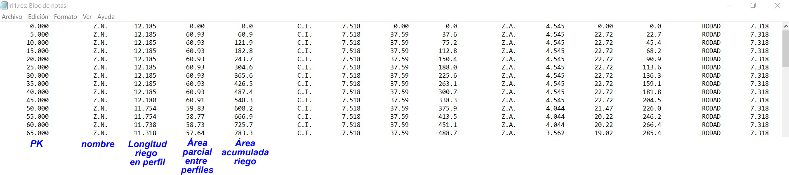 BIM Astarları seçenekleriyle, BIM modeliyle hangi astar türlerinin (yapıştırma, kür ve/veya bağlayıcı) oluşturulacağı seçilebilir. Uzatılmış Şevler seçeneği, ProjeK_P, AraEgim_P, SubRas_P tipi katmanlar üzerinde etki eder ve şevi başlatmak için referans noktasının proje kotunda (kullanılan kodda veya bu koda belirtilen mesafede) olmasını sağlar. Bu şekilde, aynı koda, aynı mesafeye ve şeve sahip tüm katmanların şevleri basamak oluşturmadan birbirinin devamı şeklinde olur. Kesit tasarımı için: On iki veri sütunu görünür; altısı güzergahın solu, diğer altısı sağı içindir. Buradan üstyapı katmanlarının genişlikleri ve yanal kapanma şevleri belirlenir. Üstyapı katmanlarının genişlikleri, proje kotu kodlarına göre belirlenir. Görülebileceği gibi, program hem sağ hem de sol taraf için her katmanın dış genişlik ve şevini (Geniş dış / Şev dış) ve iç genişlik ve şevini (Geniş iç / Şev iç) tanır. Ayrıca, bu şekilde bir koda ve o koda göre bir mesafeye referans vermek, bu ek genişliği referansa eklemek mümkündür (negatif değerler ek genişliğin çıkarıldığını gösterir). Girdiğimiz veriler belirtiyorsa, üstyapı katmanlarının iç kısmı geometrik ekseni geçebilir. Böyle bir durumda, program iç şevlerin kesişimini hesaplayacaktır. Kod sütununda, üstyapı katmanlarının uzunluğunu sınırlamak için platform kodunu tanımlayacağız. Referans kodu olarak kabul edilen kodlar -50 ile 99 arasındaki herhangi bir değeri (her ikisi de dahil, 50'den büyük kodlara sahip bir sabit platform olabileceğini unutmayın) ve 1.1, 1.2, 1.5, 1.6, 1.7 ve 1.8 kodlarını içerir. Varsayılan olarak iç genişletme için referans kodu 1, dış genişletme için 2'dir. Yani, 1.2 koduna bir genişlik referans verilirse ve bu kod mevcut değilse, referans 1 koduna atlar; 1.5 koduna bir genişlik referans verilirse ve bu kod mevcut değilse, referans 2 koduna atlar. Örnek Tümü proje kotuna paralel olan birkaç katmandan oluşan bir üstyapı katmanının geometrisini nasıl tanımlayacağınızı göstermek için, bir taraf için bu örneğin aşağıdaki adımlarını izlemeniz önerilir:
Bunun için, kalınlık tanımlandıktan ve katman aktif hale getirildikten sonra, katmanın dış kenarının taşıt yolu kenarına (kod 2) ulaşması için Geniş dış sütununa 0.000 değerini ve Kod sütununa 2 değerini girmek yeterlidir. Bu durumda ayrıca dışa doğru 25 cm taşması gerektiği belirtildiği için, önceki değere 0.250 eklenmelidir, dolayısıyla Geniş dış hücresinde 0.000 + 0.250 = 0.250 olmalıdır.
Bu durumda, Geniş dış sütununa üstyapı katmanlarının uçlarına ulaşacak kadar büyük bir değer girmek yeterlidir. Böylece, Geniş dış = 10 için, program kod 2'den başlayarak 10 m'lik bir katman oluşturur, ancak üstyapı katmanının sınırına daha önce ulaştığı için onu geçmez. Diğer yandan, Geniş iç sütununa bir şey belirtmeye gerek yoktur, çünkü önceki katmanlar tarafından işgal edilen 'alan', sonrakiler tarafından (yapım sırasına göre) dikkate alınacaktır.
Bu durum, katmanın dış kısmının 11 koduna ulaşması gerektiğini, dolayısıyla Kod sütununa 11 değerini, 20 cm eksik olacak şekilde Geniş dış = -0.200 (eksi işareti 20 cm'lik mesafenin içe doğru olduğunu gösterir) olarak tanımlayacağımızı belirtir. Ayrıca, KOT_D sütununa kalınlığın değil, kotun girildiği ve dolayısıyla değerinin 0.3 + 0.15 = 0.45 olacağı hatırlatılır.
Yan temel tabakası durumuna benzer.
Dolayısıyla, KOT_D = 0.500 ve Geniş dış = 0.200 ve Kod = 2.
Dış koda referans, dolayısıyla Geniş dış = 0 ve Kod = 11 olacaktır. Palyelere karşılık gelen kısım için dolgular kullanılacaktır. Metrajlarının hesaplanması için, Dolguları Listele kutucuğunun işaretlenmesi gerekecektir. Üstyapı katmanı simetrik olduğu için, bu değerler sağ tarafta tanımlandıysa, sol tarafa kopyalanmaları için [Sol <= Sağ] butonuna basılacak veya sol tarafta tanımlanıp sağa kopyalanmaları isteniyorsa [Sol => Sağ] butonuna basılacaktır. Üstyapı katmanlarını tanımlayan yüzeyler aşağıdaki gibi kodlanır:
Karayolunda bir üstyapı katmanının yarı-enkesiti: 1,2,3,100,101,102:
Bir Üstyapı Katmanının Vektörel Tanımı Bir üstyapı kesitini oluşturan katmanların geometrileri vektörel olarak da tanımlanabilir. 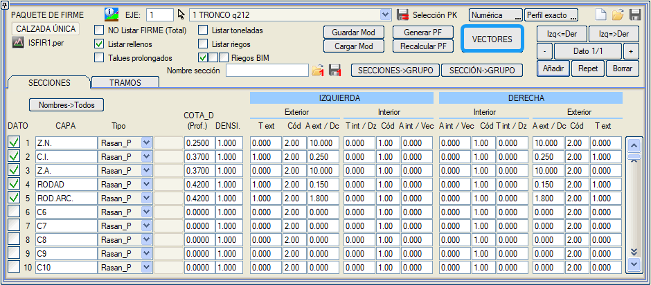
Her vektörel katman aşağıdaki verilerle tanımlanır:
a) Yatay.
b) Deverli (referans noktasından döndürülür). c) Sabit % eğimli (referans noktasından döndürülür).
Üstyapı Kesitlerinin Güzergah Boyunca Tanımlanması ve Kesitler Arası Geçiş Her üstyapı kesiti, bir kesitten diğerine geçmeyi sağlayan tipik veri gezgini altında bulunan ilgili butonlarla eklenir, tekrarlanarak eklenir veya silinir. 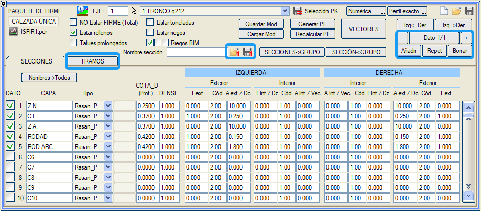
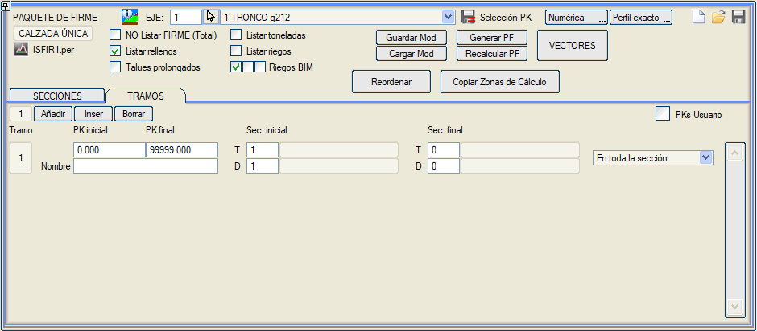 Başlangıç KM ve Bitiş KM alanlarına girilen değerler, tanımlanmakta olan tip kesitin kapsadığı aralığı belirler. Varsayılan olarak, ISTRAM®/ISPOL® iki ardışık kesim arasında üstyapı katmanlarının geometrik geçişlerini yapmaz. Geçişleri gerçekleştirmek için, Bitiş Kes. alanında bitiş kesitinin numarası belirtilmelidir. Böylece, 0'dan farklı bir değer verilirse, başlangıç KM ile bitiş KM arasındaki kesimde, mevcut üstyapı kesiti ile bu kutucukta numarası belirtilen kesit arasında bir geçiş yapılır. Kullanıcı KM'leri seçeneği, kilometrelerin kullanıcı değerleri olarak girilmesine olanak tanır. Seçenek etkinleştirilebilir/devre dışı bırakılabilir ve etkinleştirme durumu .vol dosyasında saklanır. Her bir Üstyapı uygulama Kesiminde, yarma Y ve dolgu D durumları için farklı kesitler tanımlanabilir. Aynı kilometrede sağ ve sol tarafa farklı kesitler uygulanabilir (Yamaç kesitleri). Yeniden Sırala: Bu araç, hesaplama bölgelerini yeniden sıralama aracına benzer şekilde çalışır, yani bir çakışma durumunda en son tanımlanan kesim geçerli olur. (Bu, genişletme ve takviye kesimleri için ayrı ayrı yapılır). Hesaplama Bölgelerini Kopyala aracı, eğer bu üstyapı kesiti mevcutsa, uygulanacak üstyapı kesiti olarak tip kesit numarasını da kopyalar. [Yeniden Sırala] seçeneği, üstyapı verilerini aşağıdaki şekilde sıralamayı sağlar:
Her kesitin, listelerde görünecek bir adı olabilir. Bu ad, KESİT ADI alanında belirtilir. [1'i Kaydet] ve [1'i Yükle] butonları, mevcut üstyapı kesitini .1pf uzantılı bağımsız bir dosyaya kaydetmeyi ve geri yüklemeyi sağlar, bu da yeniden kullanılabilecek üstyapı kesit kütüphaneleri oluşturma imkanı tanır. [Kaydet] ve [Yükle] seçenekleri, tanımlanan kesitler setini uygulama aralıklarıyla birlikte .pfm adlı tek bir dosyaya kaydetmeyi veya geri yüklemeyi sağlar. Bir yükleme yapılması durumunda, mevcut üstyapı katman tanımı ve aralıkları okunanla değiştirilir. Üstyapı Katmanlarının Hesaplanması 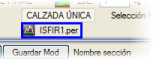[ÜK Oluştur] (üstyapı katmanı oluştur) butonu, BOYKESİT dikey menüsündeki [Ü. Katmanı Oluştur] seçeneği ile aynı anlama gelir. Bu tanımı uygular, hesaplar ve raporları ile enkesit dosyasını (ISFIR#.per, # güzergah numarasıdır) oluşturur. Metrajlar ISFIR.dar tablosu kullanılarak yapılır, ancak burada tanımlanan bileşen adlarına sadık kalınır. Bu diyalog kutusundan ISFIR#.per dosyasını doğrudan düzenleyebilirsiniz. [ÜK Yeniden Hesapla] (üstyapı katmanını yeniden metrajlandır) seçeneği, BOYKESİT dikey menüsündeki [Ü.K. Y. Hesapla] seçeneği veya PROJE'deki [RFI] butonu ile aynı anlama gelir ve ISFIR#.per dosyasını ISPOL#.per dosyasıyla karşılaştırır (burada # güzergah numarasıdır), eğer ikincisinde subrasante değişiklikleri veya kenarlarda kırpma bulursa birincisinin geometrisini düzeltir ve yeniden metrajlandırarak raporları oluşturur. [Mod Kaydet] ve [Mod Yükle] seçenekleri, BOYKESİT menüsünde görünen [M Kaydet] ve [M Yükle] seçeneklerine benzer bir anlama sahiptir; ancak ISPOL#.per dosyalarını kaydetmek yerine, bu durumda üstyapı katmanlarını içeren ISFIR#.per dosyaları kaydedilir ve NN#.per adlı başka bir dosya serisine kopyalanarak sonraki hesaplamalar tarafından üzerine yazılmaktan korunur. Burada NN kullanıcı tarafından verilen temel addır ve # güzergah numarasıdır. Aynı şekilde, kaydedilen üstyapı katmanlarının adlarının kaydedildiği dosya NN.mpf olarak adlandırılır. Bu nedenle, bu kaydetme işlemini yaparken ISPOL#.per serisi için verilen adın bu ISFIR#.per serisi için olandan farklı olmasına dikkat etmek gerekir. Genişletme ve Takviye için Üstyapı Katmanları  ISFIR#.per enkesit dosyalarına (# güzergah numarasıdır), üstyapı katmanlarının tasarım ve yorumlama sürecini kolaylaştırmak için mevcut taşıt yolu ve subrasante yüzeyleri de dahil edilir. ISFIR#.per enkesit dosyalarına (# güzergah numarasıdır), üstyapı katmanlarının tasarım ve yorumlama sürecini kolaylaştırmak için mevcut taşıt yolu ve subrasante yüzeyleri de dahil edilir.Her üstyapı kesitinde kullanım alanı tanımlanabilir:
Eğer aynı katman her iki kesitte de görünüyorsa (örneğin aşınma tabakası), genişletme bölgesinde ve takviye bölgesinde farklı kalınlıklara sahip olabilir. Düzenleme (rölaj) malzemeleri sadece takviye kesitine dahil edilecek ve genişletme için olan kesitin ilgili kutucuğunda devre dışı bırakılacaktır. Takviye ve genişletmede farklı üstyapı kesitleri isteniyorsa, aşağıdaki gibi hareket edilecektir:
Mevcut taşıt yolu olan enkesitler için, ISFIR.per dosyasına Zayıf Zemin Kazısı (L107) hattının bir kopyası (L337) da eklenir. Bu, astar metrajlarının alt yüzey üzerinde, yeni veya mevcut üstyapıya oturduğu yerleri ayırarak doğru bir şekilde ölçülmesini sağlar. Bu metrajı elde etmek için Raporlar > Metrajlar > Astar Alanları menüsüne gidilmelidir.
Bir Projenin Üstyapı Katmanlarını Oluşturmak İçin İzlenecek Adımlar Program, her güzergah için raporlar oluşturmanın yanı sıra birleştirilmiş üstyapı raporları da oluşturduğundan, tüm güzergahların tüm üstyapı katmanlarının doğru bir şekilde tanımlanması ve metrajlarının alınması için kullanıcının uyması gereken bir dizi kısıtlama getirir. Bu nedenle, kullanıcının projenin üstyapısını tanımlarken aşağıdaki adımları izlemesi tavsiye edilir:
Ayrıca, mevcut güzergahın tüm Üstyapı Kesitlerini, uygulama aralıklarını değiştirmeden aynı gruptaki tüm güzergahlar için kopyalama imkanı da vardır. Bunun için [KESİTLER->GRUP] butonuna basılacaktır. Ayrıca her bir üstyapı uygulama kesimine bir ad verme imkanımız da bulunmaktadır. Böylece BIM için her bileşene iki özellik eklenebilir: Üstyapı Kesitinin Adı ve Uygulama Kesiminin Adı. 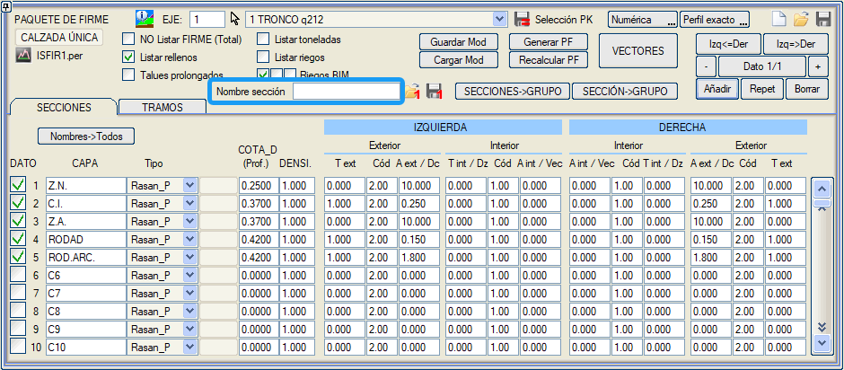
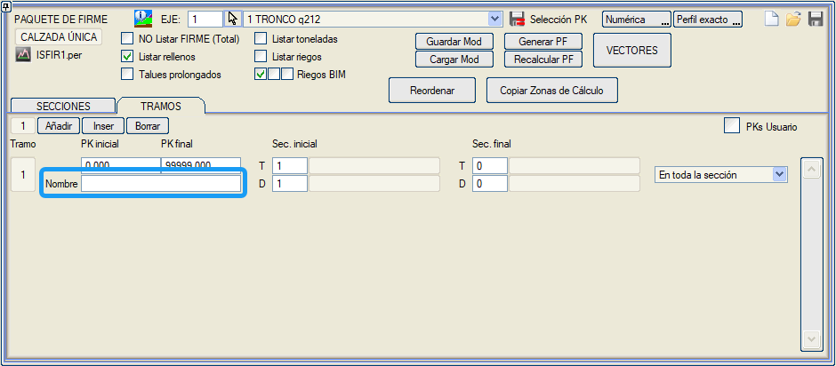
|
 Doğal Granüler Temel
Doğal Granüler Temel